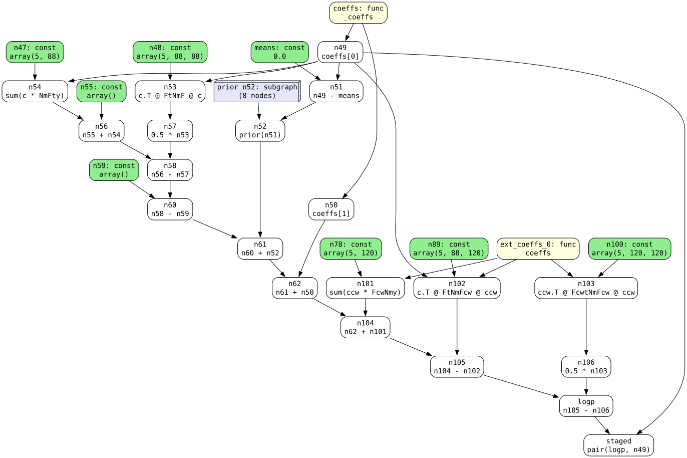
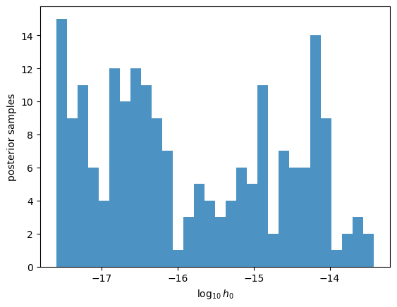
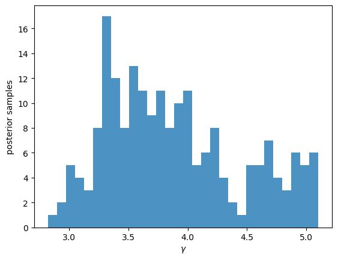
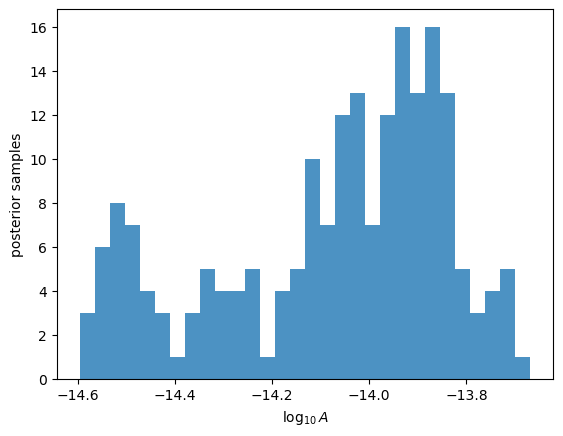

Sampling a continuous-wave signal on its own Fourier basis#
This tutorial builds a pulsar-timing-array model that contains a continuous-wave (CW) source carried on its own Fourier basis – “Route A” – and samples it with NUTS.
The CW is added to a Hellings-Downs (HD) gravitational-wave-background model through ArrayLikelihood(..., extsignals=[...]). Unlike a Gaussian process, the CW has no prior: its Fourier coefficients are a deterministic function of a few physical parameters. Because it lives on its own basis it can use more frequency components than the red-noise / GWB GPs, so it reaches the higher frequencies a CW search needs (the bin spacing is fixed at 1/T_obs for every Fourier basis).
The model has four pieces:
per-pulsar red noise – a
commongpFourier GPan HD common-process GWB – a
globalgpFourier GPdecentering –
ArrayLikelihood(decenter=True), which samples the GP coefficients in a whitened (unit-normal) framea CW on its own basis –
extsignals=[makecw_extsignal(...)]
from pathlib import Path
import sys
import numpy as np
import jax
import matplotlib.pyplot as plt
import discovery as ds
# from discovery import Params
from discovery import metamath as mh
from discovery import metamatrix as mm
# enable .graph attribute on mm.func outputs so we can inspect the
# computation graph after model construction.
mm.keepgraph = True
# pull in the metamatrix monkeypatch from the parity-test scaffold so that
# building this model captures metamath kernels instead of matrix.py ones.
sys.path.insert(0, str(Path(ds.__path__[0]).parent.parent / 'tests'))
from metamatrix._patch import metamatrix_patch
Load the pulsars#
We use the first 10 pulsars from the v1p1 feather files shipped alongside discovery.
datapath = Path(ds.__path__[0]) / '../../data'
psrs = [ds.Pulsar.read_feather(f)
for f in sorted(datapath.glob('v1p1*.feather'))][:5]
print(f"loaded {len(psrs)} pulsars")
loaded 5 pulsars
Build the model#
makecw_extsignal builds the CW on its own Fourier basis with n_cw components. We choose n_cw larger than the red-noise (n_rn) and GWB (n_gw) component counts so the CW basis reaches higher frequencies.
The rest is a standard ArrayLikelihood: a commongp for per-pulsar red noise, a globalgp for the HD-correlated background, and decenter=True for whitened-frame sampling. The CW is wired in with extsignals=[cw].
n_rn = 30 # red-noise Fourier components
n_gw = 14 # GWB Fourier components
n_cw = 60 # CW Fourier components (own basis -- larger on purpose)
hd = True
T = ds.getspan(psrs)
if not hd:
with metamatrix_patch():
cw = ds.makecw_extsignal(psrs, components=n_cw, T=T, pulsarterm=True)
model = ds.ArrayLikelihood(
[ds.PulsarLikelihood([psr.residuals,
ds.makenoise_measurement(psr, noisedict=psr.noisedict, ecorr=True),
ds.makegp_timing(psr, svd=True)])
for psr in psrs],
commongp=ds.makecommongp_fourier(psrs, ds.makepowerlaw_crn(14), components=n_rn,
T=T, name='red_noise', common=['crn_gamma', 'crn_log10_A']),
decenter=True, extsignals=[cw])
# force the cached_property to be built INSIDE the patch context so the
# graph captures metamath objects.
_ = model.clogL
_ = model.logL
print(f"{len(model.clogL.params)} sampled parameters "
f"({len(cw.params)} of them CW)")
# n_rn = 30 # red-noise Fourier components
# n_gw = 14 # GWB Fourier components
# n_cw = 60 # CW Fourier components (own basis -- larger on purpose)
# T = ds.getspan(psrs)
else:
with metamatrix_patch():
cw = ds.makecw_extsignal(psrs, components=n_cw, T=T, pulsarterm=True)
model = ds.ArrayLikelihood(
[ds.PulsarLikelihood([psr.residuals,
ds.makenoise_measurement(psr, noisedict=psr.noisedict, ecorr=True),
ds.makegp_timing(psr, svd=True)])
for psr in psrs],
commongp=ds.makecommongp_fourier(psrs, ds.powerlaw, components=n_rn,
T=T, name='red_noise'),
globalgp=ds.makeglobalgp_fourier(psrs, ds.powerlaw, ds.hd_orf,
components=n_gw, T=T, name='gw'),
decenter=True, extsignals=[cw])
_ = model.clogL
_ = model.logL
print(f"{len(model.clogL.params)} sampled parameters "
f"({len(cw.params)} of them CW)")
34 sampled parameters (12 of them CW)
ds.priordict_standard
{'(.*_)?efac': [0.1, 10],
'(.*_)?t2equad': [-8.5, -5],
'(.*_)?tnequad': [-8.5, -5],
'(.*_)?log10_ecorr': [-8.5, -5],
'(.*_)?rednoise_log10_A.*': [-20, -11],
'(.*_)?rednoise_gamma.*': [0, 7],
'(.*_)?rednoise_log10_fb': [-9, -6],
'(.*_)?red_noise_log10_A.*': [-20, -11],
'(.*_)?red_noise_gamma.*': [0, 7],
'(.*_)?red_noise_log10_fb': [-9, -6],
'crn_log10_A.*': [-18, -11],
'crn_gamma.*': [0, 7],
'crn_log10_fb': [-9, -6],
'gw_(.*_)?log10_A': [-18, -11],
'gw_(.*_)?gamma': [0, 7],
'gw_log10_fb': [-9, -6],
'(.*_)?dmgp_log10_A': [-20, -11],
'(.*_)?dmgp_gamma': [0, 7],
'(.*_)?dmgp_alpha': [1, 3],
'crn_log10_rho': [-9, -4],
'gw_(.*_)?log10_rho': [-9, -4],
'(.*_)?red_noise_log10_rho\\(([0-9]*)\\)': [-9, -4],
'(.*_)?red_noise_crn_log10_rho\\(([0-9]*)\\)': [-9, -4],
'cw_ra': [0, 6.283185307179586],
'cw_dec': [-1.5707963267948966, 1.5707963267948966],
'cw_inc': [0, 3.141592653589793],
'cw_sindec': [-1.0, 1.0],
'cw_cosinc': [-1.0, 1.0],
'cw_psi': [0, 3.141592653589793],
'cw_log10_f0': [-9.0, -7.0],
'cw_log10_h0': [-18.0, -11.0],
'cw_phi_earth': [0.0, 6.283185307179586],
'(.*_)?cw_phi_psr': [0.0, 6.283185307179586]}
Look at the clogL computation graph#
model.clogL now wraps a metamath graph. With mm.keepgraph = True the
callable carries .graph (the folded/pruned graph that runs at every
sample) and .graph.subgraphs (the un-folded sub-graphs like
N.make_solve and P.make_inv). Below we print a text summary and write
an SVG of the top-level graph.
# top-level (folded, pruned) graph
mm.print_graph(model.clogL.graph)
## graph
coeffs: func = <function VectorWoodburyKernel.make_kernelproduct_gpcomponent.<locals>._coeffs at 0x43cd40680>
means: const = 0.0
ext_coeffs_0: func = <function make_extsignal_fourier.<locals>.coeffs at 0x377f39260>
n47: const = array(5, 88)
n48: const = array(5, 88, 88)
n49: node(coeffs) = coeffs[0]
n50: node(coeffs) = coeffs[1]
n51: node(n49, means) = n49 - means
prior_n52: graph = subgraph prior_n52[5dd1]
n52: node(prior_n52, n51) = prior(n51)
n53: node(n49, n48) = c.T @ FtNmF @ c
n54: node(n49, n47) = sum(c * NmFty)
n55: const = array()
n56: node(n55, n54) = n55 + n54
n57: node(n53) = 0.5 * n53
n58: node(n56, n57) = n56 - n57
n59: const = array()
n60: node(n58, n59) = n58 - n59
n61: node(n60, n52) = n60 + n52
n62: node(n61, n50) = n61 + n50
n78: const = array(5, 120)
n89: const = array(5, 88, 120)
n100: const = array(5, 120, 120)
n101: node(ext_coeffs_0, n78) = sum(ccw * FcwNmy)
n102: node(n49, n89, ext_coeffs_0) = c.T @ FtNmFcw @ ccw
n103: node(ext_coeffs_0, n100) = ccw.T @ FcwtNmFcw @ ccw
n104: node(n62, n101) = n62 + n101
n105: node(n104, n102) = n104 - n102
n106: node(n103) = 0.5 * n103
logp: node(n105, n106) = n105 - n106
staged: node(logp, n49) = pair(logp, n49)
# total array constants: 164562 elements
## subgraph prior_n52[5dd1]
c_for_prior: arg
gp0_phiN: func = <function makecommongp_fourier.<locals>.priorfunc at 0x377f3bec0>
n0: node(c_for_prior) = c_for_prior[:,0:60]
n1: node(n0, gp0_phiN) = gp0 diag logprior
gp1_phiN: func = <function makeglobalgp_fourier.<locals>.priorfunc at 0x377f3ca40>
n2: node(c_for_prior) = c_for_prior[:,60:88]
n3: node(n2, gp1_phiN) = gp1 dense logprior
logpr: node(n1, n3) = n1 + n3
# total array constants: 0 elements
164562
# render an SVG of the graph
mm.visualize_graph(model.clogL.graph, fold=False, format='svg')

Evaluate the coefficient likelihood#
With decenter=True the quantity we sample is clogL – the coefficient likelihood, a function of the GP hyperparameters, the whitened GP coefficients, and the CW parameters. The CW enters clogL through GP-CW cross-terms; its parameters never touch the GP prior.
Here is a single evaluation at a test point, just to confirm the model is wired up. We draw the hyperparameters from their priors, the whitened (decentered) GP coefficients as unit normals, and fix the CW at a non-degenerate point.
rng = np.random.default_rng(0)
pars = ds.sample_uniform(model.logL.params)
# decentered GP coefficients are sampled in a whitened (unit-normal) frame
for psr in psrs:
pars[f'{psr.name}_gw_coefficients({2 * n_gw})'] = rng.standard_normal(2 * n_gw)
pars[f'{psr.name}_red_noise_coefficients({2 * n_rn})'] = rng.standard_normal(2 * n_rn)
# CW parameters at a fixed, non-degenerate point
for k in cw.params:
if k.endswith('log10_h0'):
pars[k] = -14.0
elif k.endswith('log10_f0'):
pars[k] = -7.7
elif k.endswith('sindec') or k.endswith('cosinc'):
pars[k] = 0.3
elif k.endswith('phi_psr'):
pars[k] = rng.uniform(0, 2 * np.pi)
elif k == 'cw_phi_earth':
pars[k] = 1.7
else:
pars[k] = 0.5
clogl = jax.jit(model.clogL)
P = pars # Params.from_dict(pars, names=model.clogL.params)
print("clogL at test point =", float(clogl(P)[0]))
clogL at test point = 885499.2601169792
model.clogL.params
['B1855+09_cw_phi_psr',
'B1855+09_gw_coefficients(28)',
'B1855+09_red_noise_coefficients(60)',
'B1855+09_red_noise_gamma',
'B1855+09_red_noise_log10_A',
'B1937+21_cw_phi_psr',
'B1937+21_gw_coefficients(28)',
'B1937+21_red_noise_coefficients(60)',
'B1937+21_red_noise_gamma',
'B1937+21_red_noise_log10_A',
'B1953+29_cw_phi_psr',
'B1953+29_gw_coefficients(28)',
'B1953+29_red_noise_coefficients(60)',
'B1953+29_red_noise_gamma',
'B1953+29_red_noise_log10_A',
'J0023+0923_cw_phi_psr',
'J0023+0923_gw_coefficients(28)',
'J0023+0923_red_noise_coefficients(60)',
'J0023+0923_red_noise_gamma',
'J0023+0923_red_noise_log10_A',
'J0030+0451_cw_phi_psr',
'J0030+0451_gw_coefficients(28)',
'J0030+0451_red_noise_coefficients(60)',
'J0030+0451_red_noise_gamma',
'J0030+0451_red_noise_log10_A',
'cw_cosinc',
'cw_log10_f0',
'cw_log10_h0',
'cw_phi_earth',
'cw_psi',
'cw_ra',
'cw_sindec',
'gw_gamma',
'gw_log10_A']
Sample with NUTS#
We sample the decentered model with NUTS from numpyro. The sample sites are:
xi– the whitened GP coefficients, as one array-shaped site of shape(npsr, 2*(n_rn + n_gw))(not one site per pulsar)gammas,log10_As– the red-noise and GWB power-law hyperparametersthe CW earth-term parameters (
cw_log10_h0,cw_log10_f0, …)cw_phi_psr– the per-pulsar CW pulsar-term phases
The model assembles these into the parameter dict that clogL expects and adds the log-likelihood with numpyro.factor.
import numpyro
import numpyro.distributions as dist
import numpyro.infer as infer
jclogl = jax.jit(model.clogL)
npsr = len(psrs)
earth = ['cw_log10_h0', 'cw_log10_f0', 'cw_ra', 'cw_sindec',
'cw_cosinc', 'cw_psi', 'cw_phi_earth']
def cw_model(hd=True):
if hd:
xi = numpyro.sample("xi", dist.Normal(0, 100).expand([npsr, 2 * (n_rn + n_gw)]))
else:
xi = numpyro.sample("xi", dist.Normal(0, 100).expand([npsr, 2 * (n_rn)]))
gammas = numpyro.sample("gammas", dist.Uniform(0, 7).expand([npsr + 1]))
log10_As = numpyro.sample("log10_As", dist.Uniform(-20, -11).expand([npsr + 1]))
# CW earth-term parameters
h0 = numpyro.sample("cw_log10_h0", dist.Uniform(-18.0, -11.0))
f0 = numpyro.sample("cw_log10_f0", dist.Uniform(-9.0, -7.0))
ra = numpyro.sample("cw_ra", dist.Uniform(0.0, 2 * np.pi))
sd = numpyro.sample("cw_sindec", dist.Uniform(-1.0, 1.0))
ci = numpyro.sample("cw_cosinc", dist.Uniform(-1.0, 1.0))
psi = numpyro.sample("cw_psi", dist.Uniform(0.0, np.pi))
phe = numpyro.sample("cw_phi_earth", dist.Uniform(0.0, 2 * np.pi))
phi_psr = numpyro.sample("cw_phi_psr", dist.Uniform(0, 2 * np.pi).expand([npsr]))
pars = {f'{p.name}_red_noise_log10_A': log10_As[i] for i, p in enumerate(psrs)}
pars.update({f'{p.name}_red_noise_gamma': gammas[i] for i, p in enumerate(psrs)})
if hd:
pars.update({'gw_log10_A': log10_As[-1], 'gw_gamma': gammas[-1]})
pars.update({f'{p.name}_gw_coefficients({2 * n_gw})': xi[i, 2 * n_rn:2*n_rn + 2*n_gw]
for i, p in enumerate(psrs)})
else:
pars.update({'crn_log10_A': log10_As[-1], 'crn_gamma': gammas[-1]})
pars.update({f'{p.name}_red_noise_coefficients({2 * n_rn})': xi[i, :2 * n_rn]
for i, p in enumerate(psrs)})
# pars.update({f'{p.name}_crn_coefficients({2 * n_gw})': xi[i, 2 * n_rn:]
# for i, p in enumerate(psrs)})
pars.update(dict(zip(earth, (h0, f0, ra, sd, ci, psi, phe))))
pars.update({f'{p.name}_cw_phi_psr': phi_psr[i] for i, p in enumerate(psrs)})
ll, _ = jclogl(pars)
numpyro.deterministic("loglike", ll)
numpyro.factor("ll", ll)
Run the sampler. The warmup/sample counts below are small so the tutorial finishes quickly – increase them substantially for a production run.
kernel = infer.NUTS(cw_model, max_tree_depth=8, target_accept_prob=0.8)
sampler = infer.MCMC(kernel, num_warmup=200, num_samples=200, num_chains=1)
sampler.run(jax.random.key(42))
sampler.print_summary(exclude_deterministic=True)
sample: 100%|██████████| 400/400 [03:02<00:00, 2.19it/s, 255 steps of size 3.07e-03. acc. prob=0.99]
mean std median 5.0% 95.0% n_eff r_hat
cw_cosinc 0.09 0.54 0.18 -0.70 0.89 14.34 1.11
cw_log10_f0 -7.55 0.36 -7.44 -8.00 -7.12 9.68 1.17
cw_log10_h0 -15.84 1.22 -16.20 -17.60 -14.16 3.54 2.03
cw_phi_earth 1.08 1.09 0.64 0.00 2.93 13.60 1.03
cw_phi_psr[0] 3.08 1.91 3.02 0.05 5.67 6.96 1.28
cw_phi_psr[1] 2.08 1.54 1.55 0.09 4.69 9.34 1.00
cw_phi_psr[2] 4.05 1.80 4.61 1.15 6.25 9.89 1.34
cw_phi_psr[3] 3.58 1.88 3.86 0.56 6.24 6.78 1.32
cw_phi_psr[4] 2.92 1.50 2.89 0.97 5.61 24.11 1.06
cw_psi 1.53 0.70 1.57 0.36 2.56 16.77 1.14
cw_ra 3.98 1.79 4.58 1.03 6.24 25.41 1.04
cw_sindec 0.07 0.32 0.10 -0.36 0.65 45.02 1.00
gammas[0] 2.50 1.76 2.38 0.02 5.39 7.05 1.48
gammas[1] 4.15 0.30 4.20 3.62 4.63 5.54 1.32
gammas[2] 2.01 0.63 2.04 0.90 2.96 18.57 1.19
gammas[3] 3.78 1.84 3.77 1.13 6.68 10.22 1.01
gammas[4] 3.50 2.39 3.29 0.52 6.98 4.35 1.85
gammas[5] 3.89 0.58 3.78 3.16 5.00 6.27 1.49
log10_As[0] -17.02 1.84 -17.27 -19.85 -14.43 10.86 1.05
log10_As[1] -13.59 0.06 -13.60 -13.70 -13.51 12.15 1.04
log10_As[2] -12.82 0.15 -12.83 -13.02 -12.54 19.46 1.13
log10_As[3] -16.46 1.58 -16.28 -19.11 -14.02 8.95 1.00
log10_As[4] -18.04 1.65 -18.32 -19.97 -15.45 3.80 1.85
log10_As[5] -14.08 0.24 -14.01 -14.54 -13.81 5.91 1.48
xi[0,0] -0.14 0.83 -0.26 -1.63 1.06 18.16 1.02
xi[0,1] 0.75 0.88 0.77 -0.62 2.21 18.45 1.01
xi[0,2] 0.05 0.80 0.07 -1.59 1.19 25.33 1.00
xi[0,3] -0.21 0.86 -0.46 -1.21 1.52 6.21 1.18
xi[0,4] 0.22 0.86 0.26 -1.22 1.65 13.77 1.00
xi[0,5] 0.16 0.73 0.11 -1.23 1.15 13.05 1.04
xi[0,6] 0.32 1.07 0.22 -1.48 1.84 10.57 1.05
xi[0,7] 0.09 1.18 0.07 -1.75 1.74 18.18 1.02
xi[0,8] 0.03 1.04 -0.01 -1.70 1.67 8.66 1.00
xi[0,9] 0.08 0.66 0.07 -0.92 1.21 27.42 1.01
xi[0,10] 0.40 1.10 0.41 -1.06 2.39 11.07 1.51
xi[0,11] -0.11 1.13 -0.12 -1.68 1.87 14.15 1.12
xi[0,12] 0.04 1.06 -0.00 -1.41 2.05 7.23 1.41
xi[0,13] -0.03 1.23 -0.29 -1.68 1.91 12.96 1.01
xi[0,14] 0.46 0.80 0.48 -0.84 1.94 24.42 1.00
xi[0,15] 0.07 0.81 0.02 -1.37 1.21 9.91 1.34
xi[0,16] -0.01 0.77 0.05 -1.29 1.20 18.54 1.11
xi[0,17] -0.41 0.74 -0.41 -1.65 0.56 12.15 1.06
xi[0,18] 0.34 0.71 0.30 -0.83 1.36 20.86 1.11
xi[0,19] 0.35 0.78 0.46 -0.84 1.49 9.87 1.00
xi[0,20] 0.18 0.99 0.25 -1.06 2.09 6.18 1.01
xi[0,21] 0.15 1.08 0.32 -1.35 1.77 10.26 1.01
xi[0,22] -0.08 1.00 -0.21 -1.75 1.53 6.50 1.04
xi[0,23] 0.19 1.09 0.17 -1.36 2.01 15.51 1.00
xi[0,24] 0.62 0.86 0.61 -0.92 1.77 10.70 1.08
xi[0,25] -0.12 0.99 0.08 -1.50 1.28 12.61 1.16
xi[0,26] 0.33 0.98 0.27 -1.29 2.03 18.69 1.04
xi[0,27] -0.25 1.00 0.02 -2.10 0.92 9.37 1.00
xi[0,28] -0.46 0.63 -0.38 -1.70 0.40 7.70 1.24
xi[0,29] -0.63 0.92 -0.70 -1.90 0.93 20.90 1.12
xi[0,30] 0.24 0.96 0.07 -1.11 1.73 9.04 1.04
xi[0,31] 0.22 1.26 0.17 -1.72 2.16 5.68 1.00
xi[0,32] 0.03 0.84 -0.06 -1.24 1.49 5.80 1.42
xi[0,33] 0.18 0.62 0.07 -0.83 1.09 11.93 1.01
xi[0,34] 0.57 1.24 0.53 -1.69 2.23 11.04 1.23
xi[0,35] -0.08 0.99 -0.09 -1.48 1.81 9.11 1.04
xi[0,36] -0.90 1.08 -0.88 -2.34 1.01 9.30 1.02
xi[0,37] -0.02 0.95 -0.01 -1.56 1.54 19.98 1.03
xi[0,38] 0.20 1.19 0.27 -1.52 2.14 10.49 1.08
xi[0,39] -0.48 0.80 -0.49 -1.89 0.79 19.44 1.02
xi[0,40] -0.06 1.23 -0.22 -1.67 1.95 9.32 1.01
xi[0,41] 0.24 0.96 0.22 -1.34 1.84 13.63 1.01
xi[0,42] 0.05 0.74 -0.04 -0.79 1.73 21.38 1.03
xi[0,43] -0.25 0.96 -0.34 -1.83 1.45 14.50 1.08
xi[0,44] 0.21 0.73 0.14 -0.86 1.41 12.90 1.13
xi[0,45] 0.47 0.86 0.49 -0.79 1.93 26.71 1.01
xi[0,46] 0.64 0.73 0.80 -0.56 1.75 9.60 1.00
xi[0,47] 0.22 0.89 0.21 -0.98 1.90 21.06 1.01
xi[0,48] -0.68 0.88 -0.66 -1.86 0.91 8.12 1.00
xi[0,49] -0.37 0.89 -0.49 -1.66 1.32 11.78 1.47
xi[0,50] 0.04 0.98 0.19 -1.50 1.69 9.96 1.10
xi[0,51] 0.75 0.83 0.69 -0.46 2.09 13.43 1.00
xi[0,52] -0.14 0.96 -0.07 -1.75 1.40 8.43 1.51
xi[0,53] 0.34 1.00 0.50 -1.51 1.67 9.75 1.14
xi[0,54] 0.36 0.89 0.39 -1.23 1.68 4.99 1.40
xi[0,55] -0.13 0.85 -0.17 -1.40 1.13 5.92 1.56
xi[0,56] 0.63 0.86 0.53 -0.46 2.21 11.45 1.00
xi[0,57] -0.25 0.77 -0.31 -1.38 1.07 25.97 1.17
xi[0,58] 0.45 0.95 0.58 -0.91 1.89 16.47 1.03
xi[0,59] 0.32 0.98 0.24 -0.82 2.03 17.98 1.05
xi[0,60] 0.24 0.61 0.16 -0.78 1.10 13.25 1.00
xi[0,61] -0.02 1.38 0.05 -1.88 2.05 4.68 1.00
xi[0,62] 0.51 0.97 0.44 -1.37 1.97 6.95 1.26
xi[0,63] 0.66 0.93 0.62 -1.16 1.91 11.69 1.42
xi[0,64] 0.21 0.82 0.29 -1.28 1.44 10.86 1.10
xi[0,65] 0.19 0.97 0.49 -1.49 1.55 4.37 1.64
xi[0,66] -0.10 0.89 -0.15 -1.34 1.65 10.77 1.19
xi[0,67] -0.24 0.84 -0.32 -1.57 1.06 30.69 1.03
xi[0,68] -0.31 1.15 -0.28 -2.18 1.44 6.04 1.08
xi[0,69] -0.10 1.26 0.12 -2.23 1.99 6.58 1.00
xi[0,70] 0.02 0.90 -0.03 -1.49 1.34 17.13 1.06
xi[0,71] 0.72 0.89 0.87 -0.94 1.95 8.90 1.08
xi[0,72] -0.08 0.86 -0.04 -1.32 1.37 16.89 1.00
xi[0,73] 0.70 1.26 0.98 -1.39 2.67 7.54 1.04
xi[0,74] -0.44 1.01 -0.47 -1.84 1.06 8.74 1.00
xi[0,75] -0.22 0.83 -0.27 -1.64 1.03 18.34 1.04
xi[0,76] 0.12 0.76 0.14 -1.22 1.24 7.86 1.66
xi[0,77] -0.07 0.79 -0.15 -1.34 1.30 10.74 1.42
xi[0,78] 0.41 0.98 0.48 -1.26 1.87 12.66 1.05
xi[0,79] -0.41 1.03 -0.18 -2.54 0.83 9.96 1.03
xi[0,80] -0.31 1.00 -0.33 -1.68 1.33 6.45 1.28
xi[0,81] 0.68 0.99 0.61 -0.86 2.33 8.20 1.20
xi[0,82] 0.32 0.83 0.35 -0.84 1.64 9.02 1.07
xi[0,83] -0.61 1.13 -0.54 -2.16 1.07 5.47 1.53
xi[0,84] 0.71 1.15 0.72 -1.08 2.66 3.99 1.84
xi[0,85] -0.24 0.98 -0.31 -1.76 1.43 9.00 1.00
xi[0,86] -0.20 1.07 -0.39 -1.40 2.09 10.37 1.33
xi[0,87] -0.58 1.09 -0.54 -2.10 1.17 5.34 1.19
xi[1,0] -0.40 1.13 -0.63 -1.92 1.64 7.13 1.00
xi[1,1] 0.23 1.00 0.21 -1.61 1.53 33.68 1.00
xi[1,2] -0.09 1.01 -0.26 -1.57 1.63 26.44 1.01
xi[1,3] 0.31 0.93 0.33 -1.12 1.99 15.98 1.25
xi[1,4] 0.08 0.86 0.24 -1.50 1.23 9.69 1.02
xi[1,5] -0.16 0.97 -0.07 -1.89 1.22 8.34 1.47
xi[1,6] -0.16 0.77 -0.11 -1.41 1.05 15.36 1.07
xi[1,7] 0.28 0.99 0.25 -1.02 2.05 21.87 1.02
xi[1,8] -0.40 0.96 -0.40 -2.10 0.99 16.66 1.25
xi[1,9] 0.00 1.31 0.21 -2.39 2.03 7.65 1.13
xi[1,10] -0.52 1.01 -0.45 -2.08 1.00 7.88 1.00
xi[1,11] 0.22 0.88 0.33 -1.18 1.48 21.95 1.00
xi[1,12] -0.04 0.75 -0.07 -1.20 1.23 24.20 1.03
xi[1,13] 0.19 1.06 0.16 -1.59 1.63 15.81 1.10
xi[1,14] -0.20 0.92 -0.09 -1.65 1.32 9.34 1.10
xi[1,15] 0.16 0.84 0.25 -1.20 1.38 20.47 1.00
xi[1,16] -0.39 0.98 -0.46 -1.70 1.43 13.98 1.00
xi[1,17] -0.26 1.00 -0.39 -1.66 1.35 21.87 1.08
xi[1,18] 0.48 0.74 0.47 -0.59 1.66 6.24 1.40
xi[1,19] -0.13 0.91 -0.15 -1.87 1.01 19.46 1.03
xi[1,20] 0.12 1.00 0.17 -1.54 1.48 10.24 1.00
xi[1,21] -0.48 0.82 -0.38 -2.10 0.70 7.27 1.42
xi[1,22] -0.30 0.92 -0.12 -1.78 0.92 11.34 1.18
xi[1,23] -0.68 0.80 -0.61 -1.77 0.82 15.87 1.19
xi[1,24] 0.04 1.02 -0.07 -1.59 1.80 10.93 1.21
xi[1,25] 0.59 1.31 0.36 -1.13 3.09 7.10 1.00
xi[1,26] -0.11 1.12 -0.17 -2.17 1.69 9.18 1.12
xi[1,27] -0.23 0.90 -0.31 -1.48 1.47 9.26 1.11
xi[1,28] 0.19 0.86 0.25 -1.14 1.47 9.46 1.29
xi[1,29] 0.01 0.77 -0.07 -1.41 1.13 12.60 1.27
xi[1,30] 0.08 0.93 0.16 -1.27 1.67 11.81 1.10
xi[1,31] -0.34 1.05 -0.42 -1.83 1.36 14.03 1.46
xi[1,32] 0.01 1.14 -0.05 -1.79 1.61 9.08 1.04
xi[1,33] 0.23 0.88 0.08 -1.04 1.71 6.92 1.33
xi[1,34] 0.16 0.78 0.30 -1.20 1.36 18.59 1.00
xi[1,35] 0.38 1.01 0.28 -1.19 1.97 12.51 1.03
xi[1,36] 0.51 0.76 0.56 -0.56 1.84 14.92 1.02
xi[1,37] -0.27 1.00 -0.34 -1.82 1.20 5.74 1.35
xi[1,38] 0.11 0.77 0.17 -1.17 1.15 21.88 1.00
xi[1,39] 0.49 1.30 0.56 -1.95 2.06 8.81 1.12
xi[1,40] -0.02 0.92 -0.22 -1.35 1.58 14.13 1.06
xi[1,41] 0.34 0.84 0.45 -1.34 1.42 9.04 1.06
xi[1,42] 0.13 0.76 0.15 -1.00 1.42 11.44 1.06
xi[1,43] 0.06 0.79 0.11 -1.16 1.36 8.06 1.18
xi[1,44] 0.63 0.88 0.69 -0.69 2.00 5.44 1.27
xi[1,45] -0.17 0.93 0.09 -1.70 1.08 5.35 1.73
xi[1,46] 0.20 0.84 0.22 -1.00 1.86 28.43 1.00
xi[1,47] 0.06 1.19 0.05 -1.63 1.84 9.15 1.12
xi[1,48] -0.32 0.66 -0.29 -1.48 0.68 9.37 1.04
xi[1,49] -0.15 0.65 -0.15 -0.98 0.96 26.55 1.02
xi[1,50] -0.65 0.91 -0.78 -2.05 0.72 8.58 1.03
xi[1,51] 0.13 0.84 0.30 -1.14 1.47 19.48 1.01
xi[1,52] -0.29 1.03 -0.35 -1.83 1.32 7.37 1.31
xi[1,53] -0.07 0.76 -0.03 -1.46 1.06 12.16 1.03
xi[1,54] -0.03 0.94 -0.06 -1.54 1.34 14.66 1.05
xi[1,55] -0.65 0.95 -0.74 -1.96 1.16 19.69 1.02
xi[1,56] -0.01 0.70 -0.02 -1.01 1.21 16.07 1.00
xi[1,57] 0.64 1.09 0.69 -0.90 2.65 10.76 1.09
xi[1,58] -0.08 0.73 -0.05 -1.29 1.01 20.01 1.13
xi[1,59] -0.06 0.97 -0.05 -1.68 1.40 18.35 1.13
xi[1,60] -0.50 0.70 -0.46 -1.91 0.43 10.89 1.06
xi[1,61] -0.40 0.87 -0.49 -1.79 1.16 9.50 1.01
xi[1,62] 0.82 0.85 0.74 -0.68 2.11 10.73 1.02
xi[1,63] 0.30 1.09 0.47 -1.29 2.19 4.41 1.65
xi[1,64] 0.09 0.63 0.13 -0.98 0.95 8.11 1.18
xi[1,65] -0.22 0.86 -0.12 -1.76 1.02 7.77 1.31
xi[1,66] 0.75 0.59 0.77 -0.10 2.04 27.70 1.00
xi[1,67] 0.64 0.91 0.72 -0.59 2.31 13.17 1.02
xi[1,68] -0.65 0.77 -0.68 -1.86 0.46 10.34 1.03
xi[1,69] -0.25 0.55 -0.26 -1.14 0.61 18.68 1.08
xi[1,70] 0.05 0.72 0.16 -1.13 1.20 16.16 1.00
xi[1,71] 0.26 0.92 0.42 -1.20 1.78 17.16 1.18
xi[1,72] -0.39 0.60 -0.38 -1.46 0.38 29.63 1.00
xi[1,73] 0.81 0.94 1.07 -0.58 2.26 9.72 1.17
xi[1,74] -0.49 0.75 -0.63 -1.61 0.75 17.63 1.00
xi[1,75] -0.10 0.78 -0.02 -1.34 1.02 16.04 1.05
xi[1,76] 0.29 0.86 0.32 -0.98 1.69 6.97 1.38
xi[1,77] 0.04 0.44 0.07 -0.71 0.66 25.75 1.04
xi[1,78] 0.47 1.04 0.63 -1.45 2.02 9.35 1.05
xi[1,79] -0.06 0.86 0.05 -1.43 1.12 8.04 1.11
xi[1,80] -0.08 0.94 -0.10 -1.40 1.68 7.87 1.24
xi[1,81] 0.63 0.75 0.73 -0.51 1.81 21.98 1.07
xi[1,82] -0.12 0.89 -0.15 -1.68 1.14 13.09 1.02
xi[1,83] -0.06 0.87 0.07 -1.29 1.27 11.90 1.38
xi[1,84] 0.11 1.25 0.26 -2.08 2.00 5.40 1.34
xi[1,85] -0.62 1.09 -0.41 -2.87 0.70 7.18 1.22
xi[1,86] 0.05 0.92 -0.10 -1.59 1.52 6.33 1.31
xi[1,87] -0.33 0.79 -0.27 -1.74 0.71 18.19 1.10
xi[2,0] 0.41 0.83 0.40 -1.00 1.58 32.91 1.10
xi[2,1] 0.76 0.59 0.80 -0.09 1.70 17.00 1.07
xi[2,2] -0.35 1.03 -0.33 -2.01 1.27 7.94 1.00
xi[2,3] 0.43 0.96 0.28 -0.79 2.18 9.00 1.01
xi[2,4] 0.11 0.90 0.15 -1.45 1.50 27.89 1.02
xi[2,5] -0.66 0.68 -0.68 -1.58 0.45 20.89 1.04
xi[2,6] 0.31 1.19 -0.00 -1.14 2.42 6.68 1.00
xi[2,7] -0.53 0.73 -0.58 -1.75 0.52 19.71 1.00
xi[2,8] -0.07 1.07 -0.12 -1.67 1.58 6.00 1.56
xi[2,9] -0.01 0.77 -0.02 -1.10 1.19 10.48 1.05
xi[2,10] -0.26 1.34 -0.25 -2.47 1.65 12.94 1.21
xi[2,11] 0.08 0.91 0.04 -1.25 1.76 10.32 1.00
xi[2,12] -0.25 0.83 -0.30 -1.87 0.79 9.31 1.24
xi[2,13] 0.07 0.92 0.15 -1.42 1.58 22.62 1.04
xi[2,14] 0.52 0.99 0.46 -0.92 2.06 12.41 1.01
xi[2,15] 0.63 0.63 0.55 -0.60 1.51 8.81 1.06
xi[2,16] -0.03 0.87 -0.10 -1.44 1.42 11.15 1.31
xi[2,17] -0.20 0.69 -0.18 -1.61 0.73 16.62 1.27
xi[2,18] -0.42 0.93 -0.51 -2.06 1.14 12.98 1.06
xi[2,19] -0.02 0.62 0.01 -1.11 0.76 17.11 1.01
xi[2,20] -0.04 0.93 -0.02 -1.76 1.23 17.28 1.01
xi[2,21] 0.42 0.86 0.44 -0.78 1.92 13.72 1.25
xi[2,22] -0.07 0.82 -0.14 -1.46 1.10 22.93 1.00
xi[2,23] -0.02 1.04 -0.12 -1.56 1.56 12.45 1.00
xi[2,24] -0.07 0.82 -0.15 -1.31 1.28 19.22 1.00
xi[2,25] -0.51 0.97 -0.31 -2.14 1.10 5.69 1.42
xi[2,26] -0.01 1.16 0.26 -1.75 1.68 7.04 1.12
xi[2,27] -0.21 0.99 -0.13 -2.00 1.34 8.62 1.21
xi[2,28] -0.96 0.92 -0.82 -2.36 0.61 7.28 1.31
xi[2,29] 0.96 1.20 1.17 -0.76 2.91 5.85 1.46
xi[2,30] 0.11 0.72 0.13 -0.85 1.27 13.86 1.00
xi[2,31] 0.40 1.30 0.40 -1.29 2.37 3.37 2.78
xi[2,32] 0.16 1.07 0.26 -1.56 1.78 5.46 1.64
xi[2,33] 0.25 1.08 0.31 -1.63 1.80 4.43 1.25
xi[2,34] 0.33 1.24 0.15 -1.25 2.50 6.18 1.53
xi[2,35] 0.24 0.71 0.28 -1.04 1.29 13.63 1.08
xi[2,36] -0.04 1.27 -0.08 -2.20 1.77 11.14 1.02
xi[2,37] 0.51 0.71 0.44 -0.79 1.52 17.82 1.01
xi[2,38] 0.42 0.95 0.42 -0.97 2.01 29.52 1.00
xi[2,39] 0.30 1.00 0.34 -1.17 1.72 11.68 1.03
xi[2,40] -0.12 1.21 -0.21 -1.89 2.21 12.99 1.00
xi[2,41] -0.42 1.15 -0.20 -2.01 1.47 11.68 1.08
xi[2,42] -0.71 0.92 -0.82 -2.08 0.88 15.56 1.08
xi[2,43] 0.07 1.06 0.14 -1.51 1.72 14.65 1.00
xi[2,44] -0.10 1.29 0.11 -2.52 1.55 6.60 1.30
xi[2,45] -0.26 0.74 -0.16 -1.43 0.83 13.64 1.05
xi[2,46] -0.25 0.69 -0.21 -1.34 0.89 15.02 1.08
xi[2,47] -0.35 0.88 -0.50 -1.44 1.35 11.43 1.15
xi[2,48] 0.23 0.88 0.24 -1.28 1.60 17.56 1.02
xi[2,49] 0.44 0.81 0.51 -1.06 1.54 6.50 1.03
xi[2,50] -0.02 0.92 0.02 -1.18 1.87 11.34 1.14
xi[2,51] 0.35 0.80 0.32 -0.81 1.88 18.02 1.03
xi[2,52] 0.06 1.01 0.11 -1.56 1.63 17.05 1.07
xi[2,53] 0.34 0.80 0.30 -1.13 1.53 15.24 1.11
xi[2,54] -1.12 0.85 -1.13 -2.27 0.45 18.47 1.02
xi[2,55] 1.03 1.00 1.03 -0.87 2.47 9.98 1.22
xi[2,56] -0.13 0.88 -0.16 -1.68 1.13 12.25 1.01
xi[2,57] 0.01 0.94 0.10 -1.33 1.77 14.66 1.00
xi[2,58] -0.17 0.69 -0.16 -1.27 0.92 24.35 1.11
xi[2,59] -0.15 1.17 -0.11 -1.76 1.74 12.38 1.44
xi[2,60] -0.76 0.91 -0.94 -2.10 0.86 9.89 1.00
xi[2,61] -0.48 0.83 -0.41 -1.71 0.75 11.87 1.00
xi[2,62] 0.82 0.78 0.94 -0.50 2.07 14.26 1.04
xi[2,63] 0.20 0.84 0.13 -1.01 1.68 5.58 1.87
xi[2,64] 0.37 0.92 0.29 -1.00 1.83 19.98 1.00
xi[2,65] 0.22 0.69 0.27 -0.88 1.17 7.39 1.00
xi[2,66] 0.17 0.88 0.06 -1.08 1.59 17.05 1.11
xi[2,67] 0.56 0.74 0.67 -0.72 1.65 34.11 1.03
xi[2,68] -0.48 1.09 -0.47 -1.91 1.73 12.75 1.00
xi[2,69] -0.40 0.83 -0.38 -1.87 0.73 14.94 1.06
xi[2,70] 0.27 0.65 0.25 -0.65 1.41 20.08 1.00
xi[2,71] 0.14 0.85 0.07 -1.30 1.47 16.08 1.05
xi[2,72] -0.74 0.79 -0.77 -1.84 0.69 13.80 1.00
xi[2,73] 0.84 1.05 0.65 -0.91 2.23 8.82 1.16
xi[2,74] -0.18 0.79 -0.09 -1.46 1.06 14.97 1.00
xi[2,75] -0.03 0.95 0.08 -1.61 1.45 15.28 1.01
xi[2,76] 0.40 1.14 0.29 -1.55 2.10 12.45 1.00
xi[2,77] 0.42 0.68 0.39 -0.63 1.44 44.13 1.03
xi[2,78] 0.20 1.05 0.13 -1.35 1.92 8.51 1.01
xi[2,79] -0.32 0.60 -0.34 -1.42 0.45 22.28 1.00
xi[2,80] -0.22 1.00 -0.33 -1.73 1.24 7.10 1.27
xi[2,81] 0.46 1.09 0.40 -1.21 2.21 18.11 1.08
xi[2,82] -0.34 0.80 -0.37 -1.67 0.91 27.52 1.04
xi[2,83] 0.08 0.95 0.08 -1.56 1.48 8.83 1.66
xi[2,84] 0.54 0.82 0.57 -0.51 1.87 9.31 1.20
xi[2,85] -0.18 1.31 -0.11 -2.59 1.67 8.48 1.14
xi[2,86] -0.30 0.80 -0.34 -1.31 1.30 5.63 1.66
xi[2,87] 0.15 0.70 0.04 -0.94 1.32 28.86 1.18
xi[3,0] 0.22 0.80 0.28 -0.97 1.66 18.70 1.06
xi[3,1] -0.15 0.87 -0.29 -1.30 1.54 22.92 1.05
xi[3,2] 0.71 0.97 0.68 -0.78 2.31 11.59 1.01
xi[3,3] 0.60 0.98 0.57 -0.94 2.07 15.76 1.14
xi[3,4] 0.05 1.26 0.43 -1.76 1.85 4.63 2.10
xi[3,5] 0.51 0.73 0.53 -0.51 1.70 11.96 1.01
xi[3,6] -0.22 0.83 -0.19 -1.66 0.82 23.23 1.00
xi[3,7] 0.00 0.96 0.09 -1.48 1.56 6.44 1.13
xi[3,8] 0.25 0.83 0.30 -1.30 1.43 23.52 1.05
xi[3,9] 0.02 0.82 0.04 -1.39 1.36 10.15 1.16
xi[3,10] 0.10 1.03 0.15 -1.35 1.93 8.21 1.15
xi[3,11] 0.22 1.27 0.03 -2.00 2.11 4.82 1.59
xi[3,12] 0.22 1.09 0.19 -1.51 2.05 10.08 1.00
xi[3,13] 0.02 0.87 -0.12 -1.29 1.28 9.11 1.10
xi[3,14] 0.64 0.87 0.74 -1.14 1.60 15.83 1.00
xi[3,15] -0.26 0.72 -0.31 -1.39 0.79 10.08 1.03
xi[3,16] -0.17 1.13 0.11 -2.18 1.39 8.36 1.26
xi[3,17] 0.55 0.66 0.54 -0.61 1.57 16.73 1.00
xi[3,18] -0.35 0.94 -0.47 -1.81 1.15 4.24 1.73
xi[3,19] -0.36 0.74 -0.21 -1.65 0.65 9.91 1.00
xi[3,20] -0.06 0.92 -0.01 -1.23 1.32 12.50 1.06
xi[3,21] 0.24 0.74 0.34 -0.88 1.54 12.22 1.02
xi[3,22] -0.11 0.96 -0.24 -1.41 1.75 16.62 1.06
xi[3,23] -0.04 0.91 0.10 -1.63 1.22 11.44 1.04
xi[3,24] -0.80 0.92 -0.52 -2.39 0.42 9.84 1.03
xi[3,25] -1.05 0.75 -1.05 -2.47 0.02 9.40 1.00
xi[3,26] -0.12 1.06 0.09 -1.78 1.53 12.49 1.04
xi[3,27] 0.10 0.85 0.14 -1.44 1.40 7.42 1.30
xi[3,28] 0.08 0.76 0.14 -1.21 1.08 18.57 1.02
xi[3,29] -0.59 0.89 -0.72 -1.90 0.75 9.22 1.05
xi[3,30] 0.05 0.89 0.17 -1.46 1.33 9.01 1.12
xi[3,31] -0.04 1.06 -0.09 -1.76 1.67 14.40 1.03
xi[3,32] -0.01 0.90 0.13 -1.57 1.30 14.07 1.00
xi[3,33] -0.09 0.85 0.03 -1.67 1.19 17.47 1.00
xi[3,34] -0.17 0.83 -0.19 -1.41 1.28 18.16 1.11
xi[3,35] -0.19 1.01 -0.17 -1.66 1.63 11.15 1.00
xi[3,36] 0.25 0.92 0.23 -1.27 1.79 28.61 1.02
xi[3,37] 0.40 0.53 0.36 -0.54 1.25 26.19 1.00
xi[3,38] 0.39 0.81 0.24 -0.78 1.77 26.66 1.00
xi[3,39] 0.97 1.05 1.03 -0.67 2.62 12.04 1.20
xi[3,40] 0.07 0.90 -0.16 -1.20 1.57 5.70 1.19
xi[3,41] -0.32 0.81 -0.40 -1.56 0.80 6.09 1.71
xi[3,42] -0.32 0.92 -0.26 -1.60 1.26 8.14 1.00
xi[3,43] -0.23 1.09 -0.18 -2.23 1.23 11.12 1.08
xi[3,44] 0.14 0.74 0.23 -1.05 1.00 15.94 1.02
xi[3,45] 0.09 0.75 0.13 -1.03 1.34 14.35 1.10
xi[3,46] -0.31 0.66 -0.27 -1.34 0.70 12.48 1.00
xi[3,47] 0.98 0.68 1.05 -0.17 2.16 11.61 1.11
xi[3,48] 0.06 1.18 -0.09 -1.61 2.07 11.00 1.01
xi[3,49] 0.01 0.81 -0.02 -1.27 1.29 22.85 1.05
xi[3,50] 0.32 0.77 0.31 -0.95 1.52 24.97 1.10
xi[3,51] -0.02 0.62 0.01 -1.07 0.88 17.88 1.11
xi[3,52] -0.13 1.25 -0.33 -2.08 1.78 8.65 1.25
xi[3,53] 0.33 0.96 0.51 -1.30 1.70 9.45 1.05
xi[3,54] 0.39 0.77 0.41 -0.87 1.43 13.49 1.01
xi[3,55] 0.04 0.84 -0.09 -1.14 1.63 13.14 1.06
xi[3,56] 0.29 0.96 0.35 -1.34 1.69 7.82 1.16
xi[3,57] 0.12 0.73 0.14 -0.98 1.37 9.01 1.22
xi[3,58] -0.59 0.98 -0.80 -2.14 1.07 4.77 1.99
xi[3,59] -0.06 1.42 0.11 -2.76 1.83 3.69 2.06
xi[3,60] -0.94 1.35 -1.08 -3.24 0.89 6.60 1.03
xi[3,61] 0.11 0.82 0.16 -1.07 1.50 10.60 1.25
xi[3,62] -0.38 0.65 -0.35 -1.61 0.59 10.04 1.22
xi[3,63] -0.17 0.83 -0.09 -1.69 0.97 12.22 1.08
xi[3,64] 0.69 1.28 0.80 -1.38 2.83 5.47 1.36
xi[3,65] 0.75 0.97 0.74 -0.66 2.57 7.08 1.20
xi[3,66] -0.32 1.06 -0.30 -1.95 1.32 8.74 1.11
xi[3,67] -0.20 1.03 0.00 -1.98 1.36 10.92 1.34
xi[3,68] -0.00 0.92 0.06 -1.33 1.51 14.77 1.00
xi[3,69] -0.86 0.83 -0.89 -2.39 0.23 9.89 1.32
xi[3,70] -0.35 0.75 -0.35 -1.29 0.92 11.81 1.22
xi[3,71] 0.13 1.02 0.00 -1.19 1.97 15.04 1.00
xi[3,72] -0.01 0.62 -0.03 -1.04 0.91 11.92 1.06
xi[3,73] -0.30 1.11 -0.27 -1.88 1.58 9.28 1.32
xi[3,74] 0.04 1.18 -0.17 -1.95 1.90 5.40 1.42
xi[3,75] -0.36 0.93 -0.29 -1.96 1.05 10.61 1.29
xi[3,76] -0.33 0.80 -0.25 -1.64 0.96 11.38 1.00
xi[3,77] -0.57 0.90 -0.60 -1.85 0.85 16.62 1.00
xi[3,78] -0.01 0.69 -0.00 -0.87 1.16 6.96 1.18
xi[3,79] -0.62 0.89 -0.67 -2.04 0.85 10.96 1.20
xi[3,80] 0.20 0.99 0.26 -1.46 1.68 9.29 1.15
xi[3,81] -0.24 1.04 -0.21 -1.87 1.31 13.36 1.04
xi[3,82] -0.10 0.83 -0.33 -1.46 1.08 7.37 1.15
xi[3,83] 0.25 1.04 0.23 -1.43 1.87 12.10 1.12
xi[3,84] 0.48 0.81 0.47 -0.61 1.84 14.61 1.00
xi[3,85] 0.37 0.80 0.32 -0.94 1.64 13.74 1.05
xi[3,86] -0.07 1.34 -0.51 -1.55 2.51 4.49 1.32
xi[3,87] -0.17 1.37 -0.05 -2.36 2.26 6.80 1.04
xi[4,0] -0.07 0.91 -0.12 -1.42 1.44 5.79 1.77
xi[4,1] -0.16 1.15 -0.34 -1.96 1.62 6.93 1.09
xi[4,2] -0.07 0.87 -0.15 -1.62 1.08 11.44 1.04
xi[4,3] -0.41 0.85 -0.38 -1.94 0.96 14.98 1.00
xi[4,4] 0.60 1.07 0.56 -1.42 2.18 11.84 1.00
xi[4,5] 0.06 0.73 0.09 -1.23 1.09 5.37 1.55
xi[4,6] 0.02 0.68 0.03 -1.09 1.10 18.01 1.10
xi[4,7] 0.08 1.02 -0.04 -1.46 1.91 6.96 1.00
xi[4,8] -0.61 1.01 -0.64 -2.69 0.57 13.95 1.05
xi[4,9] 0.18 0.78 0.29 -1.13 1.41 15.29 1.28
xi[4,10] 0.13 1.09 0.26 -1.40 2.17 16.26 1.08
xi[4,11] -0.27 0.94 -0.26 -1.62 1.52 9.54 1.11
xi[4,12] 0.01 1.03 -0.08 -1.67 1.34 8.18 1.03
xi[4,13] 0.00 0.88 -0.16 -1.16 1.66 18.88 1.00
xi[4,14] 0.02 1.02 -0.01 -1.66 1.56 8.40 1.06
xi[4,15] -0.16 0.76 -0.18 -1.45 1.00 20.93 1.02
xi[4,16] -0.44 0.63 -0.46 -1.56 0.58 17.55 1.05
xi[4,17] 0.02 1.09 0.05 -1.67 1.70 10.36 1.01
xi[4,18] -0.13 1.11 0.14 -2.01 1.47 8.08 1.04
xi[4,19] 0.21 0.55 0.28 -0.76 0.93 10.23 1.01
xi[4,20] -0.25 0.92 -0.34 -1.44 1.35 6.00 1.43
xi[4,21] -0.25 0.77 -0.20 -1.47 1.01 23.35 1.14
xi[4,22] -0.88 1.08 -0.92 -3.08 0.36 10.16 1.03
xi[4,23] -0.63 0.77 -0.65 -1.64 0.82 24.87 1.13
xi[4,24] 0.02 0.87 0.01 -1.48 1.34 13.02 1.33
xi[4,25] 0.25 1.08 0.25 -1.28 2.14 10.54 1.06
xi[4,26] 0.28 0.88 0.27 -1.20 1.61 12.78 1.07
xi[4,27] -0.03 1.31 -0.18 -1.66 2.47 8.33 1.00
xi[4,28] -0.80 0.83 -0.73 -2.27 0.49 8.99 1.08
xi[4,29] -0.22 1.12 0.10 -1.96 1.55 4.93 1.96
xi[4,30] -0.07 0.97 0.01 -1.25 1.66 19.31 1.02
xi[4,31] -0.13 1.14 0.23 -2.11 1.26 8.17 1.13
xi[4,32] 0.25 0.79 0.16 -0.98 1.75 19.82 1.03
xi[4,33] -0.13 0.79 -0.25 -1.39 1.09 8.67 1.20
xi[4,34] 0.17 0.80 0.11 -1.06 1.46 19.52 1.03
xi[4,35] -0.22 0.75 -0.32 -1.12 1.38 14.08 1.11
xi[4,36] -0.26 0.77 -0.22 -1.46 0.87 20.97 1.02
xi[4,37] 0.49 0.96 0.48 -1.00 1.91 10.69 1.08
xi[4,38] -0.06 1.12 0.02 -1.95 1.44 13.60 1.00
xi[4,39] -0.98 0.97 -1.05 -2.57 0.40 9.97 1.19
xi[4,40] -0.63 0.80 -0.53 -1.86 0.60 8.35 1.05
xi[4,41] 0.03 0.84 0.01 -1.04 1.67 11.84 1.00
xi[4,42] -0.29 0.90 -0.35 -1.55 1.45 6.13 1.49
xi[4,43] 0.26 1.44 0.28 -1.88 2.66 4.67 1.19
xi[4,44] 0.94 1.02 0.85 -0.52 2.85 6.98 1.38
xi[4,45] 0.33 0.82 0.43 -1.01 1.66 8.00 1.29
xi[4,46] 0.20 0.68 0.16 -0.92 1.33 31.33 1.04
xi[4,47] -0.16 0.83 -0.24 -1.23 1.27 16.63 1.00
xi[4,48] 0.04 0.88 -0.10 -1.18 1.62 16.59 1.09
xi[4,49] -0.12 0.80 -0.09 -1.31 1.22 9.66 1.14
xi[4,50] 0.05 1.06 0.20 -1.83 1.52 8.54 1.04
xi[4,51] -0.18 1.14 -0.19 -1.73 1.60 7.46 1.24
xi[4,52] -0.25 0.91 -0.32 -1.49 1.56 10.34 1.02
xi[4,53] 0.40 0.90 0.37 -0.86 1.82 25.77 1.02
xi[4,54] -0.08 0.86 -0.12 -1.31 1.47 10.73 1.24
xi[4,55] -0.41 0.72 -0.47 -1.47 0.81 13.03 1.06
xi[4,56] 0.20 1.17 -0.13 -1.66 1.97 7.79 1.00
xi[4,57] 0.38 1.01 0.38 -1.14 2.01 4.33 1.78
xi[4,58] 0.80 0.94 0.73 -0.78 2.15 9.16 1.22
xi[4,59] -0.02 1.04 -0.07 -1.43 1.84 7.03 1.00
xi[4,60] -0.31 0.73 -0.32 -1.39 0.97 7.77 1.05
xi[4,61] 0.22 0.93 0.37 -1.22 1.63 16.08 1.17
xi[4,62] 0.15 1.28 0.24 -1.69 2.37 6.84 1.17
xi[4,63] 0.55 1.11 0.26 -1.06 2.47 6.37 1.16
xi[4,64] 0.62 0.79 0.67 -0.95 1.61 10.81 1.01
xi[4,65] -0.46 0.99 -0.60 -1.60 1.44 6.08 1.31
xi[4,66] -0.09 1.24 0.04 -2.12 1.84 10.66 1.02
xi[4,67] 0.08 0.72 0.07 -1.05 1.29 16.98 1.01
xi[4,68] -0.09 0.70 0.03 -1.25 0.89 7.20 1.02
xi[4,69] 0.33 1.14 0.36 -1.24 2.41 8.60 1.05
xi[4,70] -0.11 0.68 -0.07 -1.31 0.91 21.08 1.12
xi[4,71] 0.55 0.87 0.45 -0.53 2.30 10.44 1.04
xi[4,72] 0.11 0.74 0.20 -1.14 1.25 12.85 1.00
xi[4,73] -0.97 0.95 -1.04 -2.36 0.76 9.08 1.18
xi[4,74] 0.53 0.97 0.61 -1.08 2.15 12.66 1.24
xi[4,75] -0.65 0.61 -0.55 -1.57 0.35 16.94 1.06
xi[4,76] 0.25 0.82 0.20 -0.72 1.84 14.37 1.01
xi[4,77] -0.48 0.82 -0.51 -1.66 0.91 15.82 1.04
xi[4,78] 0.44 0.73 0.49 -0.68 1.56 11.40 0.99
xi[4,79] -0.47 0.78 -0.49 -1.64 0.93 8.72 1.19
xi[4,80] 0.24 0.76 0.19 -0.77 1.68 6.67 1.01
xi[4,81] 0.03 0.82 -0.03 -1.26 1.33 7.63 1.27
xi[4,82] 0.17 0.71 0.09 -0.86 1.48 13.55 1.31
xi[4,83] 0.05 1.12 0.18 -1.63 1.90 17.97 1.17
xi[4,84] 0.46 0.63 0.53 -0.51 1.46 13.22 1.00
xi[4,85] 0.21 0.92 0.19 -1.10 1.87 15.18 1.00
xi[4,86] -0.10 0.71 -0.15 -1.16 1.15 11.61 1.04
xi[4,87] 0.16 1.02 0.17 -1.77 1.59 9.74 1.01
Number of divergences: 0
Look at the posterior#
The samples come back as a dict of arrays. As a quick look, here is the marginal posterior on the CW strain amplitude cw_log10_h0.
samples = sampler.get_samples()
plt.hist(np.asarray(samples['cw_log10_h0']), bins=30,
histtype='stepfilled', alpha=0.8)
plt.xlabel(r'$\log_{10} h_0$')
plt.ylabel('posterior samples')
plt.show()

from corner import corner
plt.hist(np.asarray(samples['gammas'][:, -1]), bins=30,
histtype='stepfilled', alpha=0.8)
plt.xlabel(r'$\gamma$')
plt.ylabel('posterior samples')
plt.show()
plt.hist(np.asarray(samples['log10_As'][:, -1]), bins=30,
histtype='stepfilled', alpha=0.8)
plt.xlabel(r'$\log_{10} A$')
plt.ylabel('posterior samples')
plt.show()

